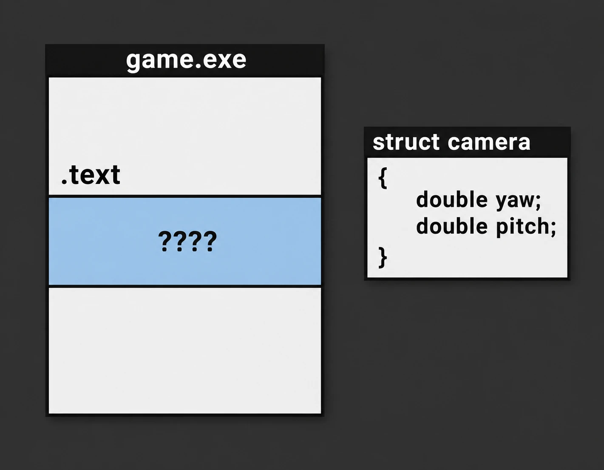

Video game cheats who have features that aim at enemies, largely use two methods to move the view angles. The first being mouse aim, which will simulate a fake mouse input. The other approach is memory aim, which involves finding the actual view angle addresses in the program and overwriting them. We will be talking about memory aim in this blog. There are some edge cases to these two categories, like writing to an address that downstream affects the view angles as opposed to directly overwriting the view angles. But the protection routine we will discuss will be applicable to these structures as well.
The concept of shadow structures was introduced to me by a friend who was reverse engineering a game. I will not be able to point out what games use shadow structures myself since I have never encountered them in any game or anti-cheat I've reverse engineered. Before explaining how shadow structures can be used to detect memory aim, let's talk about the game's threat model.
We can view all executable data as a black box that cannot be made sense of. The reason for this is because majority of game companies are going to obfuscate their game's code for DRM and anti-cheating purposes.

The game will be reaching out of its black box to access these view angles, which means that given the address, you could simply read this structure's content. For something like view angles where there are thousands of accesses per frame, like the rendering engine, minimaps, etc, it is too expensive to do something like encrypting and decrypting these values. Reading these values occurs far more frequently than writing to these values, so if we bookkeep every write to these structures we can then go and sanity check them in the future. These bookkeeping values can be encrypted since they are only referenced a couple of times per frame, making it a reasonable performance cost.
The code could look something like this.
void camera::update(double new_yaw, double new_pitch)
{
if (decrypt(shadow_camera->yaw) == this->yaw)
throw "shadow violation";
if (decrypt(shadow_camera->pitch) == this->pitch)
throw "shadow violation";
this->yaw = new_yaw;
this->pitch = new_pitch;
shadow_camera->yaw = encrypt(new_yaw);
shadow_camera->pitch = encrypt(new_pitch);
}
This absolutely carries a performance cost, which is why this cannot be done to every value in the game. However, for something that is known to be used for cheating, like view angles, this is the most efficient passive detection routine I could think of. The only way to fix this would be to reverse engineer the update function and find the encryption/decryption routines and update the shadow structures yourself. However, this creates a race condition between the cheat's writes and the game's reads, potentially exposing a discrepancy between the two structures.